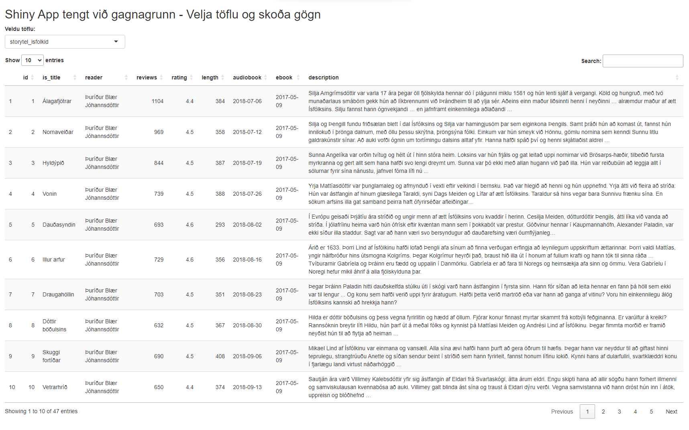

27 Mælaborð
28 Gangvirk mælaborð
Gangvirk mælaborð eru áhrifarík leið til að sýna gögn og veita notendum innsýn í flókin gagnasöfn á auðveldan og gagnvirkan hátt. Með þeim er hægt að skoða gögn í rauntíma, greina mynstur og sýna lykilupplýsingar eftir þörfum notandans. Hér eru nokkur algeng verkfæri til að búa til gagnvirk mælaborð og helstu kostir og gallar hvers og eins.
28.1 Shiny (R-pakki)
Shiny er sveigjanlegt tól fyrir notendur R sem býður upp á mikla möguleika til að búa til sérsniðin mælaborð. Kosturinn við Shiny er einföld tenging við R-kóða og gagnavinnslu, sem gerir það auðvelt að vinna með stór gögn og búa til gagnvirk mælaborð án þess að þurfa að yfirgefa R-umhverfið. Gallinn er að notendur þurfa að hafa þekkingu á R-forritun, og það getur verið flóknara að setja upp en tilbúin verkfæri.
Nánar um Shiny og hvernig hægt er að byrja að nota það.
28.2 Power BI
Power BI er notendavænt tól frá Microsoft sem er mikið notað í fyrirtækjum til að búa til mælaborð og greina gögn. Það er einfalt í uppsetningu og samþættist vel við Microsoft-vörur. Kosturinn er að það býður upp á öfluga greiningarmöguleika, en gallinn er að Power BI er ekki í boði fyrir Mac eða Linux og ókeypis útgáfan er með takmarkaða möguleika.
Nánar um Power BI.
28.3 Tableau
Tableau er öflugt tól fyrir sjónræna framsetningu gagna og veitir mikla möguleika til að búa til gangvirk mælaborð. Það er frábært fyrir notendur með litla forritunarreynslu, en gallinn er að leyfisgjöldin geta verið há og möguleikarnir á að aðlaga mælaborðið eru takmarkaðir miðað við opnari kerfi.
Nánar um Tableau.
28.4 Grafana
Grafana er opinn hugbúnaður sem er mest notaður fyrir eftirlit með kerfum og gagnagreiningu með tímaraðargögnum. Það er frítt og býður upp á mikla möguleika til að tengjast við ýmsa gagnagrunna, en það krefst meiri tæknilegrar þekkingar en önnur tól.
Nánar um Grafana.
28.5 Einfalt dæmi um Shiny App tengt við gagnagrunn
Til að sýna hvernig Shiny getur verið notað til að tengjast gagnagrunni, höfum við hér einfalt dæmi þar sem við tengjumst SQLite gagnagrunni og sýnum gögn á mælaborði.
# Hlaða inn nauðsynlegum pökkum
library(shiny)
library(DBI)
library(RSQLite)
library(DT)
# Búa til tengingu við SQLite gagnagrunn
con <- dbConnect(RSQLite::SQLite(), "../data/isfolkid.db")
# Sækja nöfn töflna úr gagnagrunninum
tables <- dbListTables(con)
# Shiny UI (notendaviðmót)
ui <- fluidPage(
titlePanel("Shiny App tengt við gagnagrunn - Velja töflu og skoða gögn"),
# Dropdown til að velja töflu
selectInput("table_choice", "Veldu töflu:", choices = tables),
# Searchable table output með DT
DTOutput("table")
)
# Shiny Server (bakviðmót)
server <- function(input, output, session) {
# Útdráttur gagna úr valinni töflu
data_selected <- reactive({
req(input$table_choice) # Gakktu úr skugga um að tafla hafi verið valin
dbGetQuery(con, paste("SELECT * FROM", input$table_choice))
})
# Birta gagnatöflu sem er searchable og sortable
output$table <- renderDT({
datatable(data_selected(), options = list(pageLength = 10, searchHighlight = TRUE))
})
}
# Keyra appið
shinyApp(ui = ui, server = server)Fyrst þarf að ganga úr skugga að viðeigandi R-pakkar séu settir upp áður en kóðinn er keyrður. Það er hægt að setja upp pakka með
install.packages(c("shiny", "DBI", "RSQLite", "tidyverse", "DT"))innan úr R.
Skráin myndi heita app.R og vera í möppu sem heitir til dæmis shiny_app og á sama stað væri gagnamappan vera data sem inniheldur gagnagrunninn isfolkid.db. Við keyrum upp appið úr kóða möppunni með skeljarskipuninni:
Rscript -e "shiny::runApp('.')"Úttakið væri þá t.d.:
Loading required package: shiny
Listening on http://127.0.0.1:5073Ef þið skoðið slóðina sem kemur upp, en hún sem vísar í localhost og svo port númer sem getur verið mismunandi milli keyrsla. Opnið hana í vafra, og þá myndið þá sjá einfalt mælaborð með gögn úr gagnagrunninum og lítur svona út:

Þetta er einfalt dæmi um hvernig hægt er að draga fram gögn úr SQLite gagnagrunni og sýna þau í mælaborði með Shiny. Nánar um hvernig hægt er að nota Shiny með gagnagrunnum en munið að setja hvergi lykilorð eða aðra trúnaðarupplýsingar í forritskóðann.
28.6 Búa til sitt eigið Shiny mælaborð
Að búa til sitt eigið Shiny mælaborð er einfalt og hægt er að byrja á að skoða opinberu heimasíðu Shiny. En til að taka ykkar allra fyrstu skref, þá er best að fylgja þessum upphafs leiðbeiningum sem er bæði til fyrir R og Python notendur.
Shiny var upphaflega hannað fyrir
Rnotendur en er núna aðeins að opna fyrirPythonnotendur meðShinyPypakkann. Þar sem Shiny öpp eru sérstaklega falleg meðggplot2myndum (og hefur verið notað í undangengnum sýnidæmum) þá verður hér stuðst viðRsýnidæmi. Ykkur er þó frjálst að prófa meðPythonef þið hafið meiri reynslu með það forritunarmál.
28.6.1 Shiny Gallery
Hægt er að skoða alls kyns Shiny mælaborð á Shiny Gallery sem eru búin til af fólki úr samfélaginu. Hægt er að keyra upp mælaborðin í vafra og skoða undirliggjandi kóða.
28.6.2 Shiny Layouts
Hægt er að setja upp mismunandi útlit á Shiny síðum með Shiny Layouts.
Mögulega viljið þið taka skrefið lengra og nota mælaborð og þá fjallar Shiny Dashboards hvernig hægt er að nota pakkana flexdashboard eða shinydashboard til að búa til sérhæfðari mælaborð.
28.6.3 Ítarefni
Bókin Mastering Shiny er opin og frí kennslubók eftir Hadley Wickham og gefur ítarlegar leiðbeiningar um hvernig hægt er að nota Shiny til að búa til gegnvirk mælaborð.